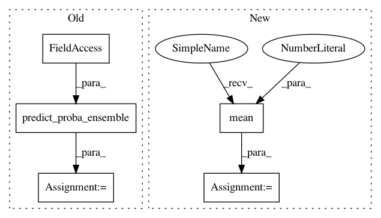

adfcd7c21f3f2fc6077eb00abf4887cd2d567880,deslib/dcs/base.py,DCS,predict_proba_with_ds,#DCS#,239
Before Change
// TODO refactor for batch (use masked array; perfom mean)
indices = self.select(competences)[0]
classifier_ensemble = self._get_classifier_ensemble(indices)
predicted_proba = predict_proba_ensemble(classifier_ensemble, query)
return predicted_proba
After Change
selected_classifiers = np.broadcast_to(selected_classifiers, probabilities.shape)
masked_proba = np.ma.MaskedArray(probabilities, ~selected_classifiers)
predicted_proba = np.mean(masked_proba, axis=1)
return predicted_proba
In pattern: SUPERPATTERN
Frequency: 3
Non-data size: 5
Instances
Project Name: scikit-learn-contrib/DESlib
Commit Name: adfcd7c21f3f2fc6077eb00abf4887cd2d567880
Time: 2018-04-06
Author: luiz.gh@gmail.com
File Name: deslib/dcs/base.py
Class Name: DCS
Method Name: predict_proba_with_ds
Project Name: scikit-learn-contrib/DESlib
Commit Name: adfcd7c21f3f2fc6077eb00abf4887cd2d567880
Time: 2018-04-06
Author: luiz.gh@gmail.com
File Name: deslib/des/base.py
Class Name: DES
Method Name: predict_proba_with_ds
Project Name: scikit-learn-contrib/DESlib
Commit Name: a9a1eced2a339815b5b78e356789d1c5419b9ea1
Time: 2018-03-13
Author: rafaelmenelau@gmail.com
File Name: deslib/util/aggregation.py
Class Name:
Method Name: average_rule